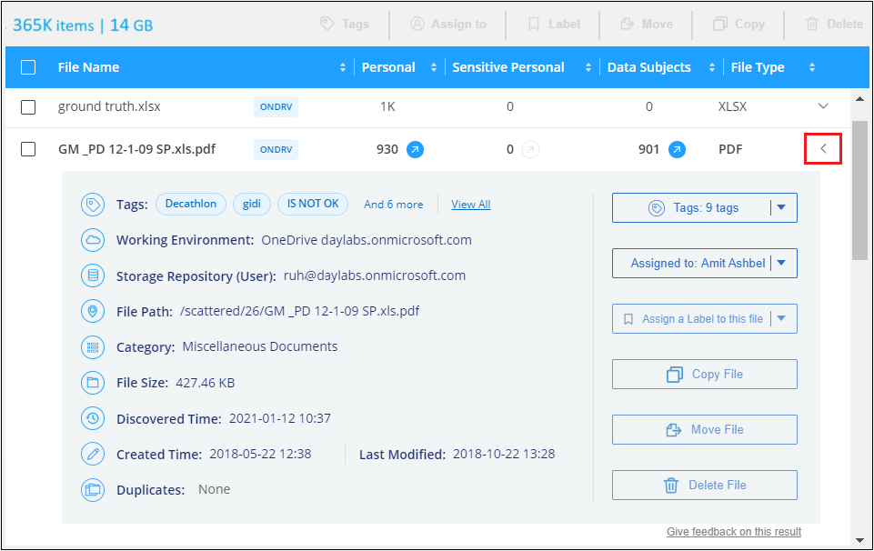
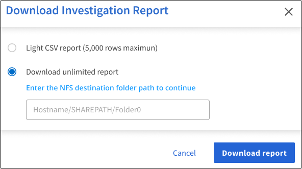

Richiedi modifiche alla documentazione
Richiedi modifiche alla documentazione Modifica questa pagina
Modifica questa pagina Scopri come collaborare
Scopri come collaborareEsaminare i dati memorizzati nella propria organizzazione
Collaboratori
È possibile analizzare i dati dell’organizzazione visualizzando i dettagli nella pagina Data Investigation. È possibile accedere a questa pagina da molte aree dell’interfaccia utente di classificazione di BlueXP, tra cui le dashboard di governance e conformità.

|
Le funzionalità descritte in questa sezione sono disponibili solo se si è scelto di eseguire una scansione di classificazione completa sulle origini dati. Le origini dati che hanno eseguito una scansione solo mappatura non mostrano i dettagli a livello di file. |
Filtraggio dei dati nella pagina Data Investigation
È possibile filtrare il contenuto della pagina di analisi per visualizzare solo i risultati desiderati. Si tratta di una funzione molto potente, in quanto dopo aver perfezionato i dati, è possibile utilizzare la barra dei pulsanti nella parte superiore della pagina per eseguire una serie di azioni, tra cui la copia di file, lo spostamento di file, l’aggiunta di un tag o di un’etichetta AIP ai file e molto altro.
Se si desidera scaricare il contenuto della pagina come report dopo averlo perfezionato, fare clic su  pulsante. Fare clic qui per ulteriori informazioni sul report Data Investigation.
pulsante. Fare clic qui per ulteriori informazioni sul report Data Investigation.

-
Le schede di livello superiore consentono di visualizzare i dati da file (dati non strutturati), directory (cartelle e condivisioni di file) o database (dati strutturati).
-
I controlli nella parte superiore di ciascuna colonna consentono di ordinare i risultati in ordine numerico o alfabetico.
-
I filtri del riquadro sinistro consentono di perfezionare i risultati selezionando gli attributi descritti nelle sezioni successive.
Filtra i dati in base alla sensibilità e al contenuto
Utilizzare i seguenti filtri per visualizzare la quantità di informazioni sensibili contenute nei dati.
| Filtro | Dettagli |
|---|---|
Categoria |
Selezionare "tipi di categorie". |
Livello di sensibilità |
Selezionare il livello di sensibilità: Personal (personale), Sensitive Personal (personale sensibile) o non Sensitive (non sensibile). |
Numero di identificatori |
Selezionare l’intervallo di identificatori sensibili rilevati per file. Include dati personali e dati personali sensibili. Durante il filtraggio nelle directory, la classificazione BlueXP totalizza le corrispondenze di tutti i file in ogni cartella (e sottocartelle). |
Dati personali |
Selezionare "tipi di dati personali". |
Dati personali sensibili |
Selezionare "tipi di dati personali sensibili". |
Soggetto interessato |
Inserire il nome completo o l’identificativo noto di un soggetto. "Scopri di più sugli argomenti dei dati qui". |
Filtrare i dati in base al proprietario dell’utente e alle autorizzazioni dell’utente
Utilizzare i seguenti filtri per visualizzare i proprietari dei file e le autorizzazioni di accesso ai dati.
| Filtro | Dettagli |
|---|---|
Aprire permessi |
Selezionare il tipo di permessi all’interno dei dati e all’interno di cartelle/condivisioni. |
Autorizzazioni utente/gruppo |
Selezionare uno o più nomi utente e/o nomi di gruppo oppure immettere un nome parziale. |
Proprietario del file |
Immettere il nome del proprietario del file. |
Numero di utenti con accesso |
Selezionare uno o più intervalli di categorie per visualizzare i file e le cartelle aperti a un determinato numero di utenti. |
Filtrare i dati in base all’ora
Utilizzare i seguenti filtri per visualizzare i dati in base ai criteri temporali.
| Filtro | Dettagli |
|---|---|
Ora di creazione |
Selezionare un intervallo di tempo in cui è stato creato il file. È inoltre possibile specificare un intervallo di tempo personalizzato per perfezionare ulteriormente i risultati della ricerca. |
Tempo scoperto |
Selezionare un intervallo di tempo in cui la classificazione BlueXP ha rilevato il file. È inoltre possibile specificare un intervallo di tempo personalizzato per perfezionare ulteriormente i risultati della ricerca. |
Ultima modifica |
Selezionare un intervallo di tempo in cui il file è stato modificato per l’ultima volta. È inoltre possibile specificare un intervallo di tempo personalizzato per perfezionare ulteriormente i risultati della ricerca. |
Ultimo accesso |
Selezionare un intervallo di tempo in cui è stato eseguito l’ultimo accesso al file o alla directory (solo CIFS o NFS). È inoltre possibile specificare un intervallo di tempo personalizzato per perfezionare ulteriormente i risultati della ricerca. Per i tipi di file sottoposti a scansione dalla classificazione BlueXP, questa è l’ultima volta che la classificazione BlueXP ha sottoposto a scansione il file. Si noti che la classificazione BlueXP non estrae l’ultimo tempo di accesso dalle seguenti origini dati: SharePoint Online, SharePoint on-premise (SharePoint Server), OneDrive, Google Drive e Amazon S3. |
Filtra i dati in base ai metadati
Utilizzare i seguenti filtri per visualizzare i dati in base alla posizione, alle dimensioni e alla directory o al tipo di file.
| Filtro | Dettagli |
|---|---|
Percorso del file |
Immettere fino a 20 percorsi parziali o completi che si desidera includere o escludere dalla query. Se si immettono entrambi i percorsi di inclusione ed esclusione, la classificazione BlueXP individua prima tutti i file nei percorsi inclusi, quindi rimuove i file dai percorsi esclusi e visualizza i risultati. Si noti che l’utilizzo di "*" in questo filtro non ha alcun effetto e che non è possibile escludere cartelle specifiche dalla scansione: Verranno acquisite tutte le directory e i file presenti in una condivisione configurata. |
Tipo di directory |
Selezionare il tipo di directory; "Share" (Condividi) o "Folder" (cartella). |
Tipo di file |
Selezionare "tipi di file". |
Dimensione del file |
Selezionare l’intervallo di dimensioni del file. |
Hash del file |
Inserire l’hash del file per trovare un file specifico, anche se il nome è diverso. |
Filtrare i dati in base al tipo di storage
Utilizzare i seguenti filtri per visualizzare i dati in base al tipo di storage.
| Filtro | Dettagli |
|---|---|
Tipo di ambiente di lavoro |
Selezionare il tipo di ambiente di lavoro. OneDrive, SharePoint e Google Drive sono classificati in "App". |
Nome dell’ambiente di lavoro |
Selezionare ambienti di lavoro specifici. |
Repository di storage |
Selezionare il repository di storage, ad esempio un volume o uno schema. |
Filtra i dati in base a tag, etichette, utenti assegnati e policy
Utilizzare i seguenti filtri per visualizzare i dati in base alle etichette o ai tag AIP.
| Filtro | Dettagli |
|---|---|
Policy |
Selezionare una o più policy. Vai "qui" per visualizzare l’elenco dei criteri esistenti e creare criteri personalizzati. |
Etichetta |
Selezionare "Etichette AIP" assegnati ai file. |
Tag |
Selezionare "il tag o i tag" assegnati ai file. |
Assegnato a. |
Selezionare il nome della persona a cui è assegnato il file. |
Filtrare i dati in base allo stato dell’analisi
Utilizzare il seguente filtro per visualizzare i dati in base allo stato di scansione della classificazione BlueXP.
| Filtro | Dettagli |
|---|---|
Stato dell’analisi |
Selezionare un’opzione per visualizzare l’elenco dei file in attesa di prima scansione, completati in scansione, in attesa di scansione o che non sono stati sottoposti a scansione. |
Evento di analisi della scansione |
Selezionare se si desidera visualizzare i file che non sono stati classificati perché la classificazione BlueXP non ha potuto ripristinare l’ultimo tempo di accesso o i file che sono stati classificati anche se la classificazione BlueXP non ha potuto ripristinare l’ultimo tempo di accesso. |
"Vedere i dettagli sull’indicatore data/ora dell’ultimo accesso" Per ulteriori informazioni sugli elementi visualizzati nella pagina di analisi durante il filtraggio utilizzando l’evento di analisi scansione.
Filtra i dati in base ai duplicati
Utilizzare il seguente filtro per visualizzare i file duplicati nello storage.
| Filtro | Dettagli |
|---|---|
Duplicati |
Selezionare se il file viene duplicato nei repository. |
Visualizzazione dei metadati del file
Nel riquadro Data Investigation Results (risultati analisi dati), fare clic su  per visualizzare i metadati del file in un singolo file.
per visualizzare i metadati del file in un singolo file.

Oltre a mostrare l’ambiente di lavoro e il volume in cui si trova il file, i metadati mostrano molte più informazioni, tra cui le autorizzazioni del file, il proprietario del file, l’eventuale presenza di duplicati del file e l’etichetta AIP assegnata (se disponibile) "AIP integrato nella classificazione BlueXP"). Queste informazioni sono utili se stai pensando di "Creare policy" perché è possibile visualizzare tutte le informazioni che è possibile utilizzare per filtrare i dati.
Tenere presente che non tutte le informazioni sono disponibili per tutte le origini dati, ma solo quelle appropriate per tale origine. Ad esempio, il nome del volume, le autorizzazioni e le etichette AIP non sono rilevanti per i file di database.
Quando si visualizzano i dettagli di un singolo file, è possibile eseguire alcune operazioni sul file:
-
È possibile spostare o copiare il file in qualsiasi condivisione NFS. Vedere "Spostamento dei file di origine in una condivisione NFS" e. "Copia dei file di origine in una condivisione NFS" per ulteriori informazioni.
-
È possibile eliminare il file. Vedere "Eliminazione dei file di origine" per ulteriori informazioni.
-
È possibile assegnare un determinato Stato al file. Vedere "Applicazione di tag" per ulteriori informazioni.
-
È possibile assegnare il file a un utente BlueXP per essere responsabile di eventuali azioni di follow-up che devono essere eseguite sul file. Vedere "Assegnazione di utenti a un file" per ulteriori informazioni.
-
Se sono state integrate etichette AIP con classificazione BlueXP, è possibile assegnare un’etichetta a questo file o modificarla se già esistente. Vedere "Assegnazione manuale delle etichette AIP" per ulteriori informazioni.
Autorizzazioni di visualizzazione per file e directory
Per visualizzare un elenco di tutti gli utenti o gruppi che hanno accesso a un file o a una directory e i tipi di autorizzazioni di cui dispongono, fare clic su Visualizza tutte le autorizzazioni. Questo pulsante è disponibile solo per i dati in condivisioni CIFS, SharePoint Online, SharePoint on-premise e OneDrive.
Si noti che se vengono visualizzati i SID (Security Identifier) invece dei nomi di utenti e gruppi, è necessario integrare Active Directory nella classificazione BlueXP. "Scopri come farlo".

Fare clic su  per consentire a qualsiasi gruppo di visualizzare l’elenco degli utenti che fanno parte del gruppo.
per consentire a qualsiasi gruppo di visualizzare l’elenco degli utenti che fanno parte del gruppo.
Inoltre, È possibile fare clic sul nome di un utente o di un gruppo e viene visualizzata la pagina di analisi con il nome dell’utente o del gruppo inserito nel filtro "User / Group Permissions" (autorizzazioni utente / gruppo), in modo da visualizzare tutti i file e le directory a cui l’utente o il gruppo ha accesso.
Verifica della presenza di file duplicati nei sistemi di storage
È possibile visualizzare se i file duplicati vengono memorizzati nei sistemi storage. Ciò è utile se si desidera identificare le aree in cui è possibile risparmiare spazio di storage. Può anche essere utile assicurarsi che alcuni file con autorizzazioni specifiche o informazioni sensibili non vengano duplicati inutilmente nei sistemi di storage.
La classificazione BlueXP utilizza la tecnologia di hashing per determinare i file duplicati. Se un file ha lo stesso codice hash di un altro file, possiamo essere sicuri al 100% che i file siano duplicati esatti - anche se i nomi dei file sono diversi.
È possibile scaricare l’elenco dei file duplicati e inviarlo all’amministratore dello storage in modo che possa decidere quali file, se presenti, possono essere cancellati. Oppure è possibile "eliminare il file" se si è sicuri che non è necessaria una versione specifica del file.
Visualizzazione di tutti i file duplicati
Se si desidera un elenco di tutti i file duplicati negli ambienti di lavoro e nelle origini dati in scansione, è possibile utilizzare il filtro duplicati > ha duplicati nella pagina analisi dati.
Tutti i file con duplicati di tutti i tipi di file (esclusi i database), con una dimensione minima di 50 MB e/o contenenti informazioni personali o sensibili, verranno visualizzati nella pagina dei risultati.
Visualizzazione se un file specifico viene duplicato
Se si desidera vedere se un singolo file ha duplicati, fare clic su nel riquadro risultati analisi dati  per visualizzare i metadati del file in un singolo file. Se sono presenti duplicati di un determinato file, queste informazioni vengono visualizzate accanto al campo duplicati.
per visualizzare i metadati del file in un singolo file. Se sono presenti duplicati di un determinato file, queste informazioni vengono visualizzate accanto al campo duplicati.
Per visualizzare l’elenco dei file duplicati e la loro posizione, fare clic su View Details (Visualizza dettagli). Nella pagina successiva, fare clic su View Duplicates (Visualizza duplicati) per visualizzare i file nella pagina di analisi.


|
È possibile utilizzare il valore "hash del file" fornito in questa pagina e immetterlo direttamente nella pagina di analisi per cercare un file duplicato specifico in qualsiasi momento, oppure utilizzarlo in un criterio. |
Report sull’analisi dei dati
Il Data Investigation Report (Report analisi dati) è un download del contenuto filtrato della pagina Data Investigation (analisi dati).
È possibile salvare il report sulla macchina locale come file .CSV (che può includere fino a 5,000 righe di dati) o come file .JSON che si esporta in una condivisione NFS (che può includere un numero illimitato di righe). Se la classificazione BlueXP sta eseguendo la scansione di file (dati non strutturati), directory (cartelle e condivisioni di file) o database (dati strutturati), è possibile scaricare fino a tre file di report.
Quando si esporta in una condivisione file, assicurarsi che la classificazione BlueXP disponga delle autorizzazioni corrette per l’accesso all’esportazione.
Generazione del report analisi dati
-
Dalla pagina Data Investigation (analisi dati), fare clic su
nella parte superiore destra della pagina. -
Selezionare se si desidera scaricare un report .CSV o .JSON dei dati e fare clic su Download Report.

Quando si seleziona un report .JSON, inserire il nome della condivisione NFS in cui verrà scaricato il report nel formato
<host_name>:/<share_path>.
Viene visualizzata una finestra di dialogo che indica che i report sono in fase di download.
È possibile visualizzare lo stato di avanzamento della generazione di report JSON in "Riquadro Actions Status (Stato azioni)".
Contenuto di ciascun report di analisi dei dati
Il Report dati file non strutturati include le seguenti informazioni sui file:
-
Nome del file
-
Tipo di ubicazione
-
Nome dell’ambiente di lavoro
-
Repository di storage (ad esempio, un volume, un bucket, condivisioni)
-
Tipo di ambiente di lavoro
-
Percorso del file
-
Tipo di file
-
Dimensione del file
-
Ora di creazione
-
Ultima modifica
-
Ultimo accesso
-
Proprietario del file
-
Categoria
-
Informazioni personali
-
Informazioni personali sensibili
-
Data di rilevamento dell’eliminazione
Una data di rilevamento dell’eliminazione identifica la data in cui il file è stato cancellato o spostato. In questo modo è possibile identificare quando sono stati spostati file sensibili. I file cancellati non fanno parte del numero di file visualizzato nella dashboard o nella pagina di analisi. I file vengono visualizzati solo nei report CSV.
Il Report dati directory non strutturate include le seguenti informazioni relative alle cartelle e alle condivisioni di file:
-
Nome dell’ambiente di lavoro
-
Repository di storage (ad esempio, una cartella o condivisioni di file)
-
Tipo di ambiente di lavoro
-
Percorso del file (nome della directory)
-
Proprietario del file
-
Ora di creazione
-
Tempo scoperto
-
Ultima modifica
-
Ultimo accesso
-
Autorizzazioni aperte
-
Tipo di directory
Il Structured Data Report include le seguenti informazioni sulle tabelle di database:
-
DB Nome tabella
-
Tipo di ubicazione
-
Nome dell’ambiente di lavoro
-
Repository di storage (ad esempio, uno schema)
-
Numero di colonne
-
Numero di righe
-
Informazioni personali
-
Informazioni personali sensibili